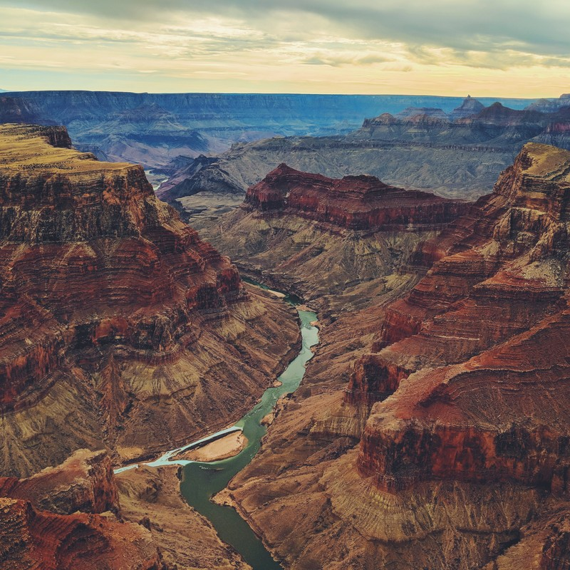
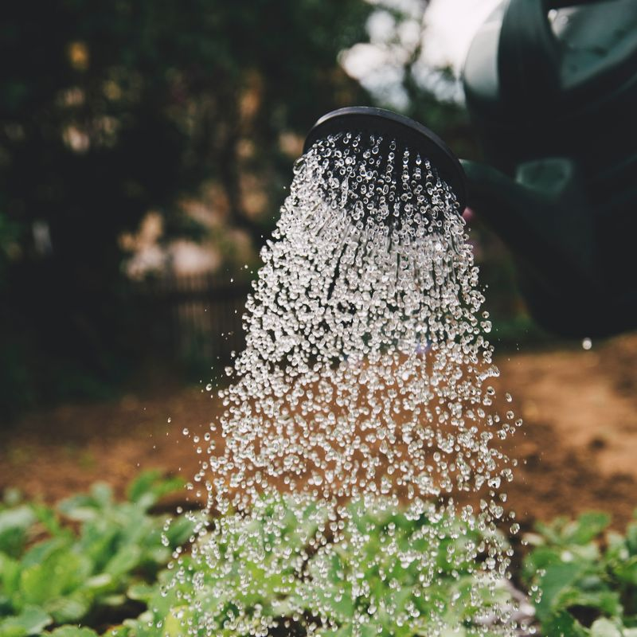
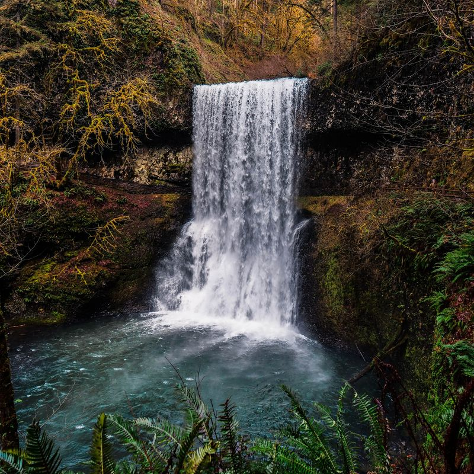

About Water
Water is a transparent, tasteless, odorless, and nearly colorless chemical substance, which is the main constituent of Earth's streams, lakes, and oceans, and the fluids of most living organisms. It is vital for all known forms of life, even though it provides no calories or organic nutrients. Its chemical formula is H2O, meaning that each of its molecules contains one oxygen and two hydrogen atoms, connected by covalent bonds. Water is the name of the liquid state of H2O at standard ambient temperature and pressure. It forms precipitation in the form of rain and aerosols in the form of fog. Clouds are formed from suspended droplets of water and ice, its solid state. When finely divided, crystalline ice may precipitate in the form of snow. The gaseous state of water is steam or water vapor. Water moves continually through the water cycle of evaporation, transpiration (evapotranspiration), condensation, precipitation, and runoff, usually reaching the sea.
Water covers 71% of the Earth's surface, mostly in seas and oceans. Small portions of water occur as groundwater (1.7%), in the glaciers and the ice caps of Antarctica and Greenland (1.7%), and in the air as vapor, clouds (formed of ice and liquid water suspended in air), and precipitation (0.001%).
Water plays an important role in the world economy. Approximately 70% of the freshwater used by humans goes to agriculture.[4] Fishing in salt and fresh water bodies is a major source of food for many parts of the world. Much of long-distance trade of commodities (such as oil and natural gas) and manufactured products is transported by boats through seas, rivers, lakes, and canals. Large quantities of water, ice, and steam are used for cooling and heating, in industry and homes. Water is an excellent solvent for a wide variety of chemical substances; as such it is widely used in industrial processes, and in cooking and washing. Water, ice and snow are also central to many sports and other forms of entertainment, such as swimming, pleasure boating, boat racing, surfing, sport fishing, diving, ice skating and skiing.
Portfolio
-  Sonaal Bangera
-  Markus Spiske
-  David Kovalenko
Contact
Let's get in touch!